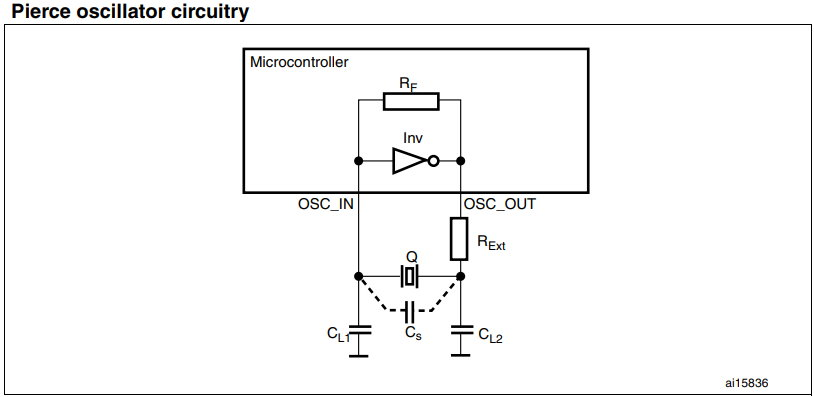

| - STM32 振盪器配置 - | |
|  | |
| ※ 若 STM32 不使用外部振盪器，OSC_IN 和 OSC_OUT 接法，而是選擇使用內部 RC 振盪器的方式 | |
| ，則建議按照下列方法配置： | |
| A. 對應於 100 腳或 144 腳以上的 MCU，OSC_IN 應該要接地，OSC_OUT 則應懸空。 | |
| B. 相對於 100 腳以下的 MCU，有兩種接法： | |
| b1. OSC_IN 和 OSC_OUT 分別通過 10K 電阻接地。此方法可提高 EMC 效能。 | |
| b2. 分別重對映 OSC_IN 和 OSC_OUT 至 PD0 和 PD1，再配置 PD0 和 PD1 為推輓輸出並輸出 '0' | |
| 。相對前面而言，此方式可以降低功耗。 | |
| 首先應該確認 STM32 內部振盪器情況，HSI 是 8MHz 的內部 RC 振盪器，誤差在 1% 左右。 | |
| 內部 RC 振盪器的精度通常比外部振盪器 HSE 要差上十倍以上。 | |
| ※ 無所謂優劣，重要的是根據應用時機，對精確度要求不高時，亦可以使用 HSI，只是應當注意的是 | |
| ，若使用 HSI 時，系統最高振盪頻率將無法達到 72MHz 的頻率。 | |
| STM32 的 ISP 就是用 HSI 內部的 RC 振盪器。 | |